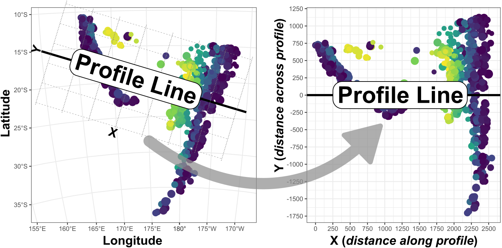
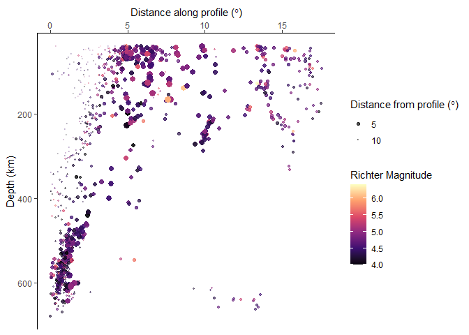

The goal of geoprofiler is to get distances along and across user-defined profile lines or transects. This is useful when variables depend on distances.

The concept of geoprofiler is a coordinate transformation of your geo-coordinates into “profile coordinates”. These coordinates are the distances along and across your profile.
Installation
You can install the development version of geoprofiler from GitHub with:
# install.packages("devtools")
devtools::install_github("tobiste/geoprofiler")Example
This is a basic example which shows you how to create a profile.
library(geoprofiler)
library(ggplot2)
#> Warning: package 'ggplot2' was built under R version 4.3.3Import example data and transfer them into a sf object:
Create a profile line from two known points:
profile <- data.frame(lon = c(160, -170), lat = c(-15, -30)) |>
sf::st_as_sf(coords = c("lon", "lat"), crs = "WGS84") |>
sf::st_shift_longitude() |>
profile_line()Note: You can also create a profile line by a direction via
profile_points()
Calculate the distances of all points along and across the profile line:
quakes_profile <- profile_coords(quakes_sf, profile = profile) |>
dplyr::bind_cols(quakes_sf)Finally, create your profile plot:
ggplot(quakes_profile, aes(X, depth, color = mag, size = abs(Y), alpha = abs(Y))) +
geom_point() +
scale_color_viridis_c("Richter Magnitude", option = "A") +
scale_size_continuous(bquote("Distance from profile (" * degree * ")"), range = c(3, .1)) +
scale_alpha_continuous(bquote("Distance from profile (" * degree * ")"), range = c(1, .1)) +
scale_y_reverse() +
scale_x_continuous(guide = guide_axis(position = "top")) +
labs(x = bquote("Distance along profile (" * degree * ")"), y = "Depth (km)") +
theme_classic()
The above example uses the quakes dataset giving the locations of 1000 seismic events of MB > 4.0. The events occurred in a cube near Fiji since 1964.
Documentation
The detailed documentation can be found at https://tobiste.github.io/geoprofiler/articles/geoprofiler.html
Author
Tobias Stephan (tstephan@lakeheadu.ca)
Feedback, issues, and contributions
I welcome feedback, suggestions, issues, and contributions! If you have found a bug, please file it here with minimal code to reproduce the issue.